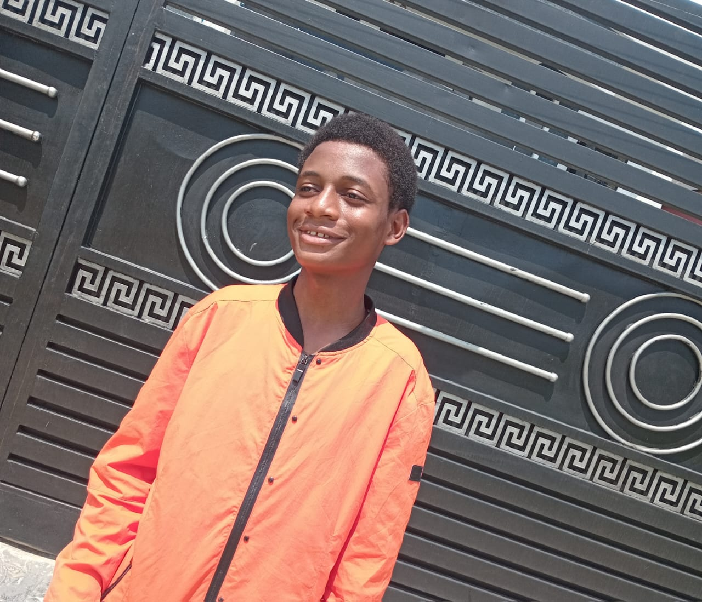

Student Member: SPE (Society of Petroleum Engineers) | NSE (Nigerian Society of Engineers) | YEFoN (Young Engineers Forum of Nigeria) | NIChE (Nigerian Institution of Chemical Engineers)
I am Ewuola Halleluyah Samuel, a Petrochemical Engineering student at the Federal University of Petroleum Resources, Effurun (FUPRE), Warri, Delta State, Nigeria. I am deeply passionate about the petrochemical and oil & gas industry, with a strong focus on process simulation, energy systems, and sustainable engineering solutions.
As an aspiring process engineer, I have developed hands-on experience in process simulation using Aspen HYSYS, working on projects including NGL recovery flowsheets, TEG absorber simulations, and catalytic process optimization. I am committed to bridging the gap between engineering education and real-world industrial application.
I am a proud STEM advocate and active volunteer, dedicated to inspiring the next generation of engineers through outreach programmes in schools and communities. I am also a creative professional with skills in media, content creation, and digital communication, using these tools to amplify engineering awareness and personal branding in the digital space.
📍 Warri, Delta State, Nigeria
A personal research project investigating methods and approaches to make conventional plastics biodegradable, addressing one of the most critical environmental challenges in modern petrochemical engineering.
Designed and simulated a full Natural Gas Liquids (NGL) recovery flowsheet using Aspen HYSYS, including a complete distillation train from demethanizer through debutanizer columns.
Performed a Triethylene Glycol (TEG) absorber simulation in Aspen HYSYS with focus on accurate mole fraction conversions, molar flow rate calculations, and natural gas dehydration processes.
Co-authored a research paper on catalytic process optimization using ZSM-5 zeolite additive framework for Fluid Catalytic Cracking (FCC) unit performance improvement. (In progress — 2026)
Active volunteer for the Energy 4me Outreach Programme — visiting schools to educate and inspire young students about energy, petroleum engineering, and STEM careers.
Active volunteer for the STEM Outreach Programme — engaging students in schools with hands-on engineering awareness activities and community development initiatives.
Served as Financial Secretary for the 2024/2025 session, managing financial records and supporting the association's activities and student welfare programmes.
Active member of the Media Unit — responsible for setting up live streaming equipment, managing cameras, and ensuring seamless broadcast of church programmes and events.
Feel free to reach out for collaborations, opportunities, or just to connect!